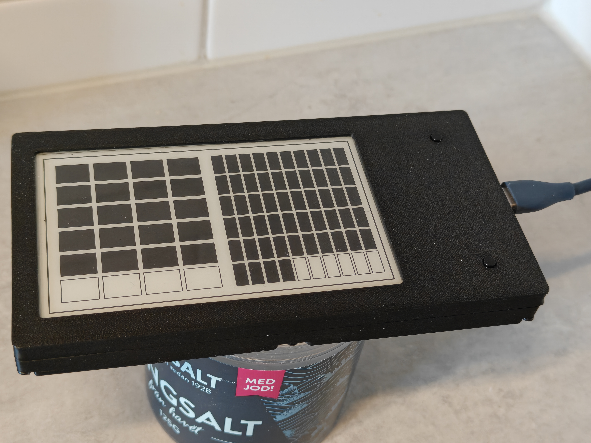
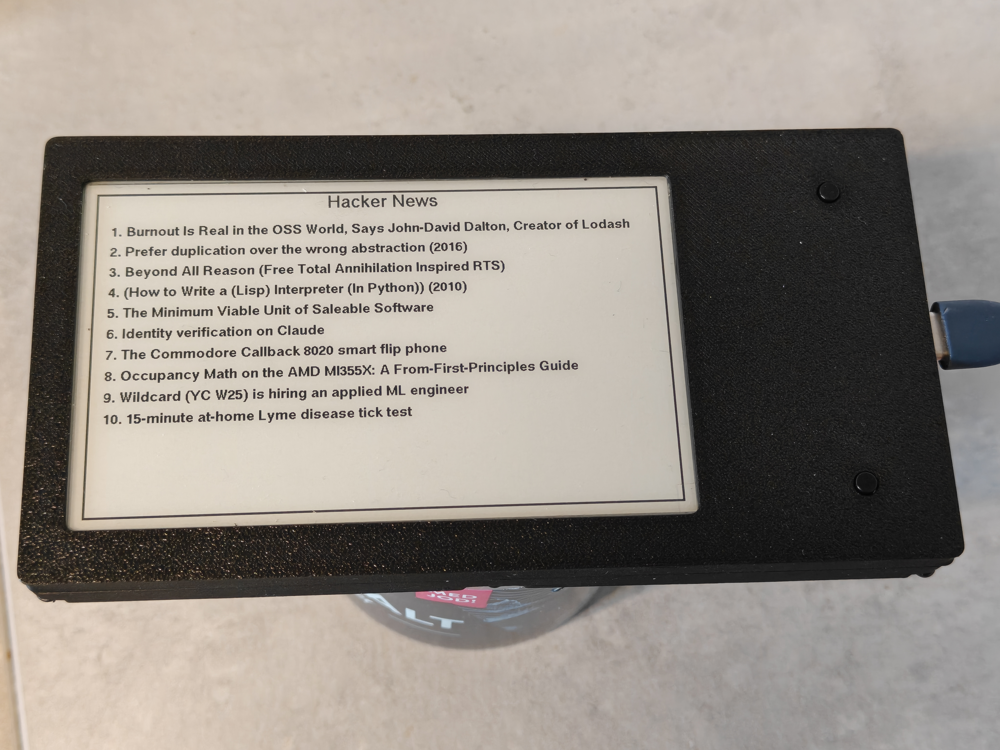
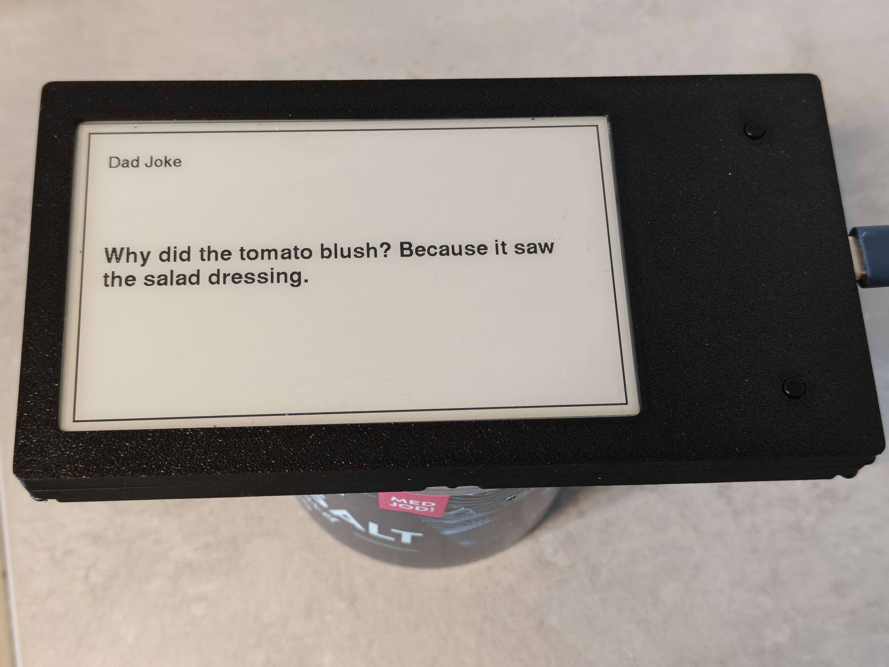
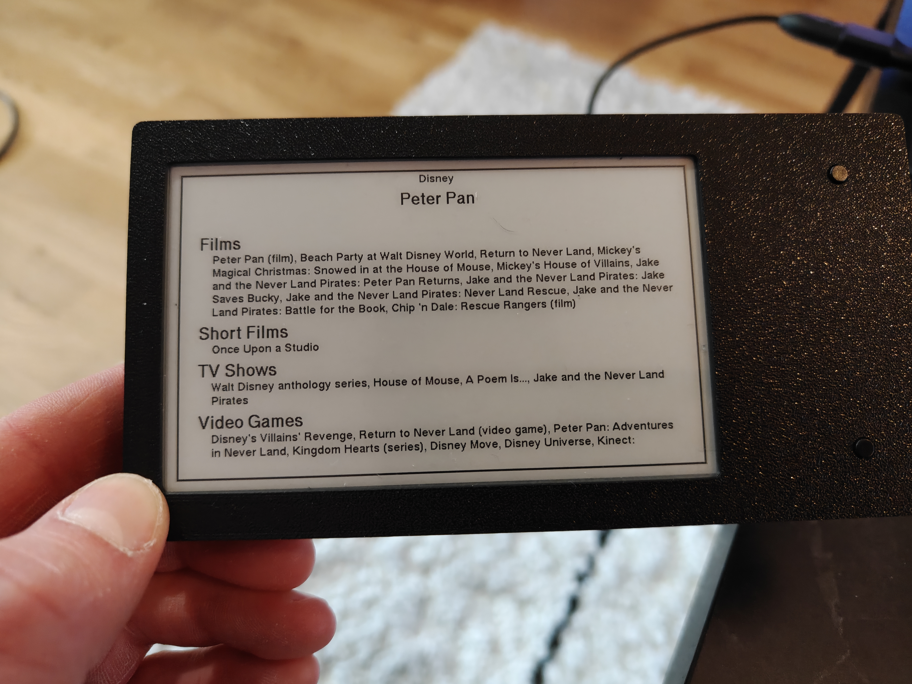

Hardware · Embedded · Rust
I have always been fascinated by e-paper displays - that paper-like look that holds an image with zero power draw. So I built my own little information dashboard around one. I wrote the firmware in Rust, flashed it onto an ESP32, soldered the electronics together by hand, and printed a case to put it all in. Now it sits on my counter and shows whatever I feel like.
The whole thing is a fun excuse to touch every layer of the stack - from soldering iron to async Rust to a CAD model - and end up with a physical object I actually use. I also got to set up the ESP32 as a WiFi access point which let me use my phone to provide the ESP32 with WiFi credentials.
A Wi-Fi-capable ESP32 drives the display and pulls live data from the internet over its wireless connection.
All of the logic - networking, fetching APIs, laying out each screen and pushing pixels to the panel - is written in Rust and flashed onto the chip.
The display, controller and wiring were soldered together. This required some reading of pinout diagrams...
A custom enclosure printed to fit the panel and hardware.
The dashboard cycles through several modes. Because it's all my own firmware, adding a new screen is just another function that draws to the display.

A clock with a custom, block-based design I came up with - the time is read from the pattern of filled and empty cells rather than digits.

The current top stories from the Hacker News leaderboard, fetched live so the front page is always up to date.

A fresh dad joke every 30 seconds. Low stakes, high reward - and a nice test of refreshing the panel on a timer.

Browse a Disney character and see every film, short, TV show and video game they appear in - pulled from an API and laid out by category.
Happy to talk e-paper, embedded Rust, or hardware tinkering in general. Find me here: